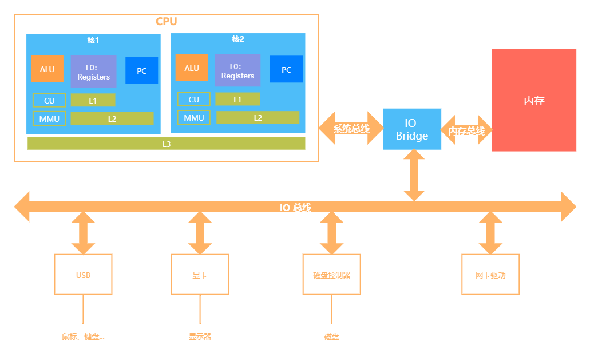
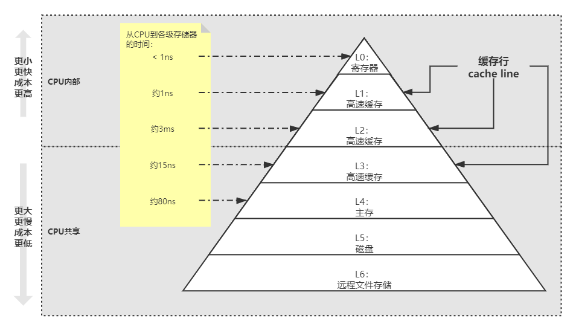
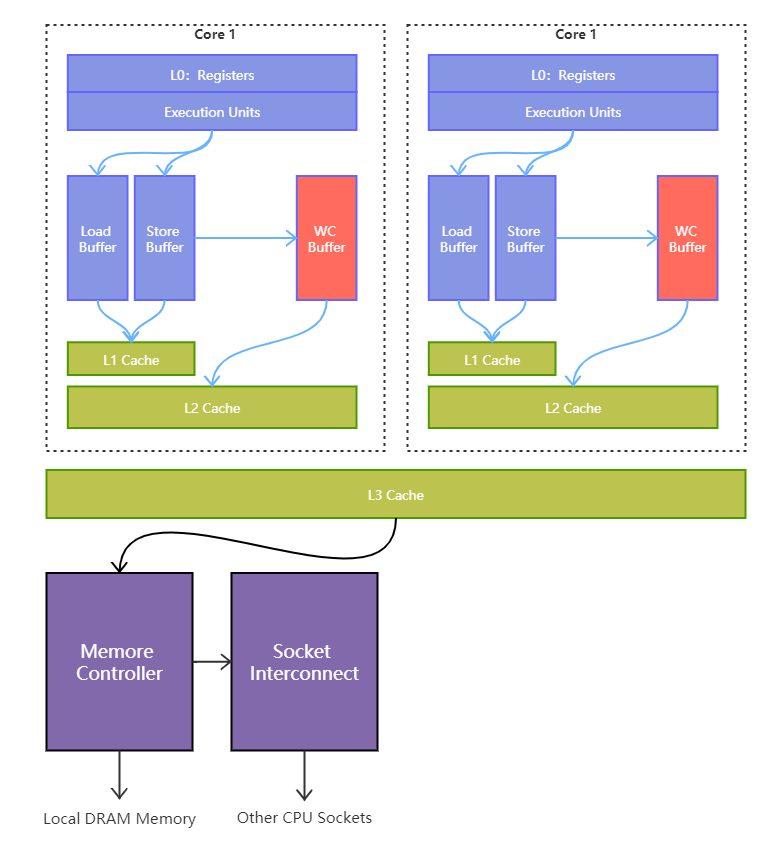

马老师说：
读书的原则：不求甚解，观其大略
你如果进到庐山里头，二话不说，蹲下头来，弯下腰，就对着某棵树某棵小草猛研究而不是说先把庐山的整体脉络跟那研究清楚了，那么你的学习方法肯定效率巨低而且特别痛苦，最重要的还是慢慢地还打击你的积极性，说我的学习怎么那么不happy啊，怎么那么特没劲那，因为你的学习方法错了，大体读明白，先拿来用，用着用着，很多道理你就明白了
操作系统
是一个承上启下的软件，向上管理应用（进程），向下管理硬件（内存、硬盘、cpu、显卡等）。
用户态、内核态
CPU分不同的指令级别。
Linux内核跑在ring 0级（内核态）， 用户程序跑在ring 3级（用户态），对于系统的关键访问，需要经过kernel的同意，保证系统健壮性。内核执行的操作有200多个系统调用，如：sendfile read write pthread fork 等。
当在系统中执行一个程序时，大部分时间是运行在用户态下的，在其需要操作系统帮助完成一些用户态自己没有特权和能力完成的操作时就会切换到内核态。
举个栗子：用户运行一个程序时，程序创建的进程开始运行自己的代码逻辑，此时处于用户态。如果需要执行文件操作等，必须通过write等系统调用，这些系统调用会调用内核的代码，此时进程会切换到内核态。内核态的进程执行完后又会回到用户态。
JVM -> 在OS的视角里，就是个普通程序，所以跑在ring 3级。
计算机组成

CPU的基本组成
- ALU（Arithmetic & Logic Unit）：
- 运算单元
- Registers：
- 寄存器，暂时存储CPU计算需要用到的数据
- PC（Program Counter）：
- 程序计数器，记录当前指令地址
- CU（Control Unit）：
- 控制单元
- MMU（Memory Management Unit）：
- 内存管理单元
- cache line：
- 缓存行，L1、L2、L3
存储器的层次结构

从L0读取数据比从L4读取数据快了近100倍。
合并写技术（Write Combining）
Write Combining Buffer，一般是4个字节。
因为ALU速度太快了，为了提高效率，CPU在写入L1的同时，写入一个WC Buffer，满了之后，再直接更新到L2，即：CPU在写入L1时，同时用WC写入L2。

系统启动
通电 -> BIOS/UEFI 工作 -> 自检 -> 到硬盘的固定位置加载bootloader -> 从CMOS读取可配置信息
内存管理
发展历程
DOS：同一时间只能有一个进程在进行
Windows9X：多个进程装入内存中
此时，引入两个问题：内存不够用，进程之间互相打扰。
为了解决以上两个问题，演变成：虚拟地址，分页装入，软硬件结合寻址。
分页——解决内存不够用
内存中分成固定大小的页框（4K），硬盘上的程序也分成4K大小的块，用到哪一块，加载哪一块，当内存装满时，通过LRU（Least Recently Used：最不常用）算法交换分区（把最不常用的一块放到swap分区，把最新的一块加载进来）。
LRU算法：LeetCode #146 阿里、头条要求手撕
- 采用：哈希表（命中元素时间复杂度O(1)） + 双向链表（排序、新增操作时间复杂度O(1)）
虚拟内存——解决相互打扰
- 为了保证互不影响，让进程工作在虚拟空间，所用的空间地址不再是直接的物理地址，而是虚拟的地址，因此，进程不可访问到别的进程的空间。
- 虚拟空间大小即寻址空间大小，64位系统为2^64bit，比物理空间大很多。
- 每个进程都虚拟的独占整个CPU
- 内存映射：
- 逻辑地址（偏移量） + 段的基地址 = 线性地址 （虚拟空间）
- 线性地址通过 OS + MMU（硬件 Memory Management Unit）转换为物理地址
ZGC
算法：Colored Pointer
- GC信息记录在指针上，而不是在头部（Mark Word），带来好处：immediate memory use
- 不支持32位系统，不支持压缩指针
- 64位分为：42位（表示地址）+ 4位（颜色状态）+ 18位（空闲指针），即，寻址空间为4T（JDK13），目前最大16T（2^44）
CPU 如何区分
一个立即数和一条指令？总线内部分为：数据总线、地址总线、控制总线，其中地址总线目前仅48位
内核同步机制
原子操作 – 内核中类似于AtomicXXX，位于
自旋锁 – 内核中通过汇编支持的cas，位于
读-写自旋 – 类似于ReadWriteLock，可同时读，只能一个写
读的时候是共享锁，写的时候是排他锁
顺序锁（2.6）： – 线程可以挂起的读写自旋锁
序列计数器（从0开始，写时增加(+1)，写完释放(+1)，读前发现单数，说明有写线程，等待，读前读后序列一样，说明没有写线程打断）
信号量 – 类似于Semaphore(PV操作 down up操作 占有和释放）
重量级锁，线程会进入wait，适合长时间持有的锁情况
读-写信号量 – downread upread downwrite upwrite
（多个写，可以分段写，比较少用）(分段锁）
互斥体(mutex) – 特殊的信号量（二值信号量）
完成变量 – 特殊的信号量（A发出信号给B，B等待在完成变量上）
vfork() 在子进程结束时通过完成变量叫醒父进程 类似于(Latch)
BKL：大内核锁（早期，现在已经不用）
禁止抢占（内核级） – preempt_disable()
内存屏障 – 见volatile